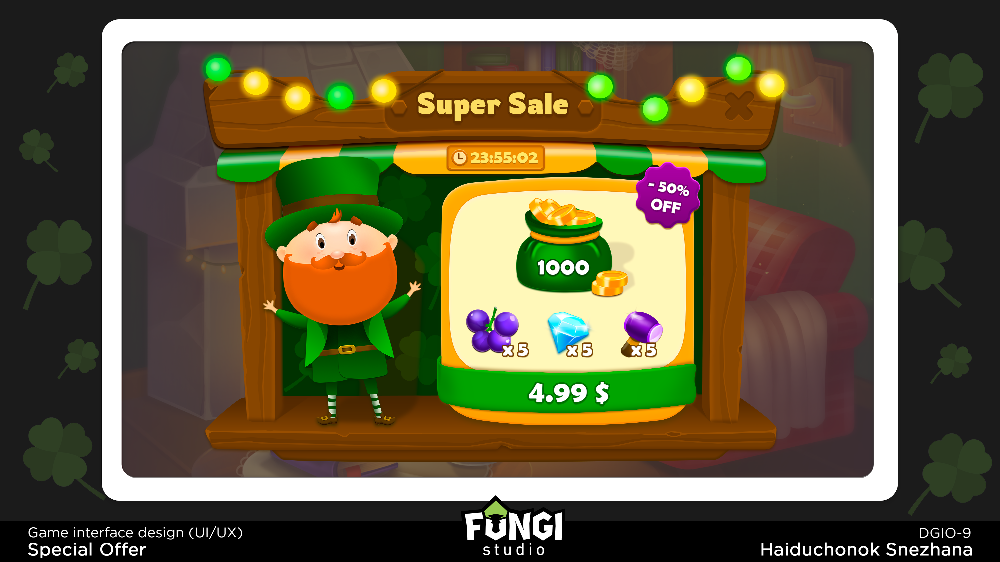

St. Patrick’s Day special offer.
A seasonal in-game offer concept built around warm, festive materials and a clear reward presentation.

Concept
The offer uses a festive green palette and a wood-style setting to create a seasonal moment that feels distinct within the game. The reward presentation is the visual focus, with themed details adding event character.